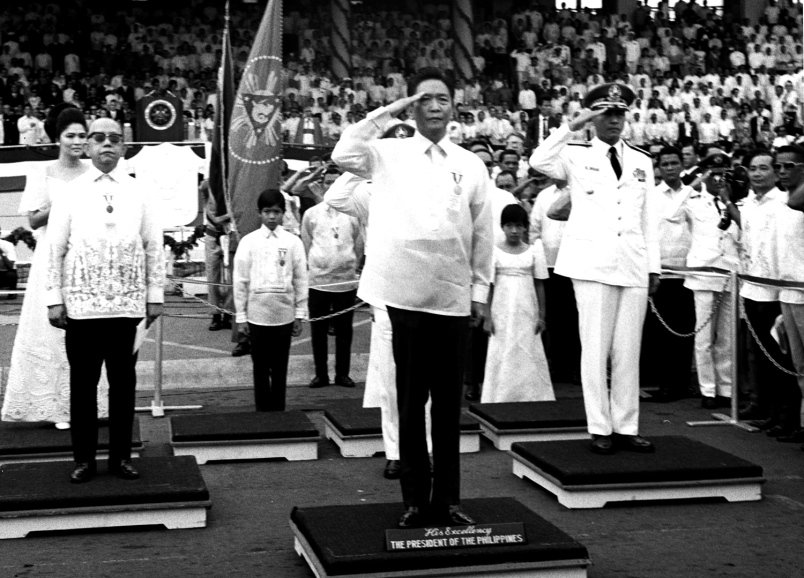

President Ferdinand Edralin Marcos
The Longest ruling president in the Philippines

Philippine President Ferdinand Marcos, standing in front of other officials and members of his family, salutes during his inaugural ceremony in Rizal Park.
Here's a timeline of Ferdinand's life as Philippine President:
- 1917 - Born in Sarrat Philippines.
- 1930 - He studied law at the University of the Philippines.
- 1947 - He was a technical assistant to Manuel Roxas, the first president of the Philippines.
- 1959 - He also one of the member of the House of Representatives and of Senate.
- 1965 - He won elected as the President of the Republic of the Philippines.
- 1966 - He issues Executive order 66, paving way for the construction of the Cultural Center of the Philippines.
- 1967 - Association of South East Asian Nation was formed (ASEAN).
- 1969 - He was reelected for a second term as President of the Republic of the Philippines.
- 1972 - He imposed martial law to suppress increasing civil strife and the threat of a communist takeover following a series of bombings in Manila.
- 1973 - Kapisanan ng mga broadcaster ng Pilipinas was established.
- 1974 - He issued presidential decree 557 changing the Philippine villages from Barrio to Barangay. he also imposed presidential decree 633 creates the National Commision on the Role of Filipino women(NCRFW).He instructs the National Power Corporation to find new areas for the proposed Kalinga dams.
- 1980 - He issued Presidential Decree 727, making unlawful “the malicious dissemination of false information,” is issued.
- 1981 - He is reelected to a third term for the Philippine presidential election.
- 1984 - Manila LRT Line 1 was opened.
- 1985 - He lead the stablishment of the Philippine Daily inquirer.
- 1986 - He was reelected as Philippine president.
"There are many things we do not want in this world.Let us not just mourn them; let us change them"
-Ferdinand E. Marcos-
If you have time, you should read more about this incredible human being in his Ferdinand Marcos Biography